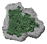
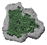
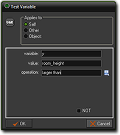
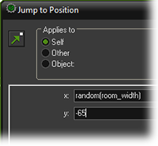

Tutorial
Page 5 of 13
Scrolling Islands
To enhance the feeling of motion we are going to add a few islands to the see. An easy way would be to create a larger background image and add the island to this background.
The disadvantage of this approach is that the islands will appear in a regular pattern, which the player soon notices. (You might have seen this in cartoons where there is a repeating
scrolling background behind a running character.) So we choose a slightly more complicated approach and add the island as objects. So first, create three sprites with the following
images (you can do this easily by dragging each of the images into the GameMaker window, then selecting "Sprite" from the oprions window that opens) :
 

As we will never use them for collision checking, it's best to ensure Precise collision checking is unchecked. This will improve the speed the game runs. For each of the islands
we create an object. In the creation event we give the object a vertical speed that is the same as the scrolling speed of the background. In this way it looks as if the islands are part
of the background because they stay at the same position with respect to the scrolling sea.
To do this, add a Create Event to the object and in it add the "Vertical Speed" DnD from the Move tab. Set the vert. speed value to 2 (the same as the room
background speed) and then click "OK" to finish. The instances of the the island objects will now scroll down with the background.
To make sure that all other objects will stay above the islands we give the island objects a Depth of 10000. Instances of objects are drawn in the order of the depth. The instances
with highest depth are drawn first. Instances with lower depth are drawn on top of them. So by giving the islands a high depth they will always be drawn first and lie below the other objects.
One more thing needs to be done. When the island disappears below the bottom of the room we want to make it reappear at the top. To do this, in the Step event of the
island we will test whether the island disappeared below the screen and, if so, let it reappear at the top. Note that the variable y indicates the vertical position of the instance.
(A value of 0 corresponds to the top of the room!)
The variable room_height indicates the height of the room. So the island disappears below the bottom of the room when y is larger than room_height. So
we can use the action to test variable values to see whether the island lies below the room:

As you see, as value you can actually use another variable name. You can actually type full expressions here.
To move to the top of the room we use the action to jump to a position. But we like to jump to a random position above the room, not a particular one. By picking a random position there is l
ess regularity in the places where the islands appear. So the player does not have the feeling that it is the same island reappearing.
But how do we give a random value? For this there is a function random(). What is a function you might ask? A function computes a value (or performs an action) based on the
value of certain arguments. The argument(s) are written between the brackets after the function name. Everywhere where you can type in values you can also use functions and variables (and expressions involving these).
There are many functions in GameMaker. But for now we only need the function random(). In the jump action we use random(room_width) as the x-coordinate.
This will create a random value between 0 and the width of the room, as we like. So the jump action will look as follows:

We use –65 for the y-position to make sure the island starts completely above the room. Because of its vertical speed it will move again in sight. We have to this for all three islands objects.
All that remains to be done is to place three islands at different heights in the room and we are done with our scrolling background.
Even though the islands reappear at regular moments, because the position is different, the player will not really notice that they are the same. You could also have added some irregularity
in the moment the islands appear by also setting a (negative) random value for the y-coordinate.